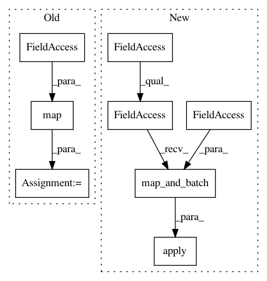

f4bb1de2fe46de99c03dba0b9c76685a998b4276,preprocessing.py,,get_input_tensors,#Any#Any#Any#Any#Any#Any#Any#Any#,183
Before Change
dataset = dataset.map(
functools.partial(batch_parse_tf_example, batch_size))
if random_rotation:
dataset = dataset.map(_random_rotation_pyfunc)
return dataset.make_one_shot_iterator().get_next()
After Change
if random_rotation:
// Unbatch the dataset so we can rotate it
dataset = dataset.apply(tf.data.experimental.unbatch())
dataset = dataset.apply(tf.data.experimental.map_and_batch(
_random_rotation, batch_size))
return dataset.make_one_shot_iterator().get_next()
In pattern: SUPERPATTERN
Frequency: 3
Non-data size: 8
Instances
Project Name: tensorflow/minigo
Commit Name: f4bb1de2fe46de99c03dba0b9c76685a998b4276
Time: 2019-12-12
Author: tmadams@google.com
File Name: preprocessing.py
Class Name:
Method Name: get_input_tensors
Project Name: google/deepvariant
Commit Name: 66d19dc2674995c96f66b65339ae5fdcd65c2b68
Time: 2019-03-28
Author: mdepristo@google.com
File Name: deepvariant/data_providers.py
Class Name: DeepVariantInput
Method Name: __call__
Project Name: tensorflow/tpu
Commit Name: 2feab9beb8c59f05ca2e1938f484b6bce638af47
Time: 2019-01-22
Author: frankchn@google.com
File Name: models/experimental/mask_rcnn/dataloader.py
Class Name: InputReader
Method Name: __call__